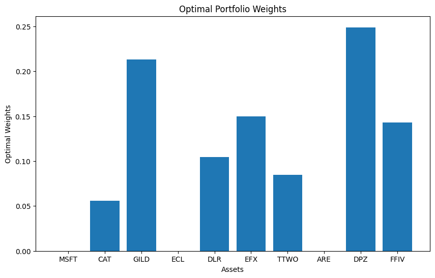
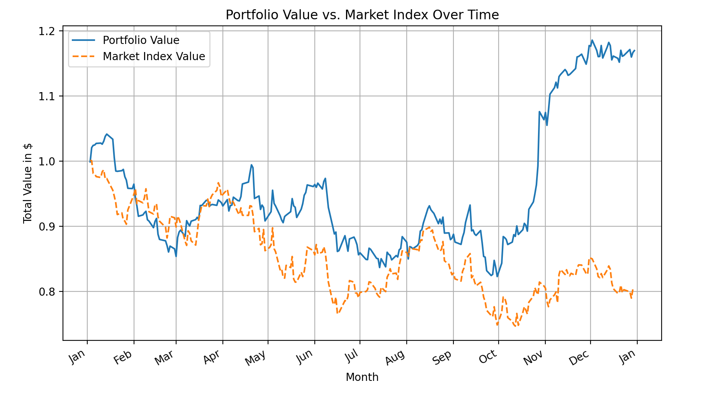

OptiQ - Results

This bar graph represents the proportion of each stock in the optimized portfolio.
View Portfolio Details

This line graph compares the historical performance of the optimized portfolio against the S&P 500.
Learn More About the Algorithm